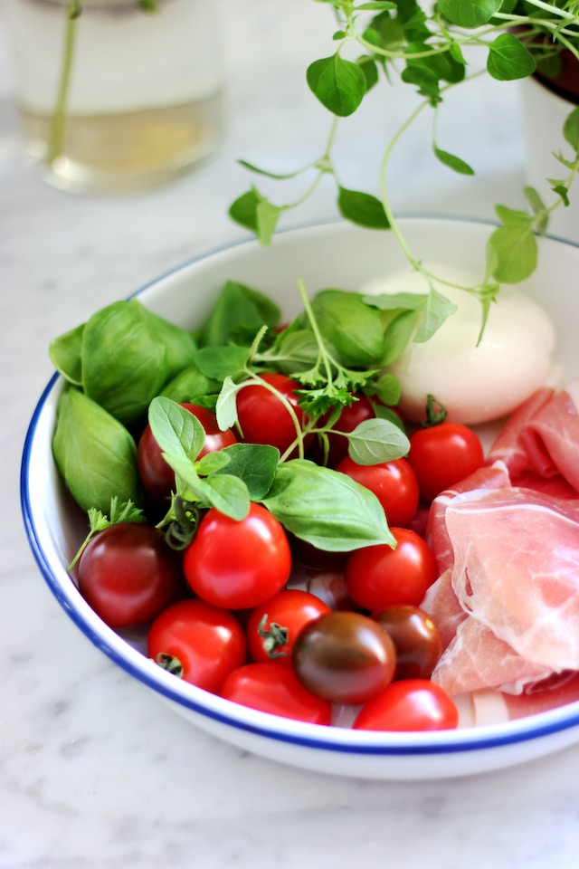
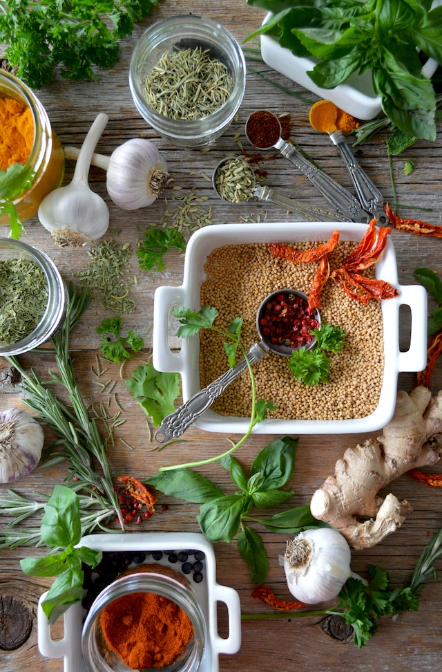
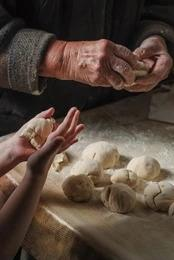

"At the heart of BudgetClockCuisine.com is a deep-rooted love for fresh, nutritious food and a passion for mindful living. Our journey began in a Mediterranean household, where the love of flavor and the importance of a shared meal were cherished traditions".
 "Rooted in family wisdom, our kitchen wasn't about fancy degrees, but about the invaluable teachings of grandmothers and mothers. Our culinary foundation was shaped by the warmth of the Mediterranean sun and the wisdom passed down through generations".
"As we embarked on adventures around the world, our curiosity took us to different cultures and flavors. Each journey enriched our cooking repertoire, as we embraced diverse cuisines and traditions. Our cooking philosophy is grounded in the belief that food is a universal language, connecting us across continents and stories".
"BudgetClockCuisine.com was born out of the desire to share this culinary journey. We understand the demands of modern life, the constant struggle to give our loved ones the best while navigating busy schedules. We've been there – wanting to create memorable meals but finding ourselves short on time. This platform is our way of extending a helping hand to busy families and individuals. We've taken the lessons learned in our own kitchen – the quick hacks, the budget-friendly recipes, the gardening joys – and packaged them for you. It's a celebration of resourceful living, where each tip is aimed at simplifying your kitchen experience. Our journey is driven by a love for wholesome food, a respect for the planet, and the belief that every moment shared over a meal is an opportunity for connection. Join us in redefining the culinary experience, one recipe, one tip, and one garden at a time."